Review for Unit One
In this document, we will review the content from unit 2: Tidyverse and ggplot.
1 Cleaning data using tidyverse
To clean data, first a data file must be read in. We do this using read.csv or read_csv, which is the tidyverse equivalent. This whole example will be worked using the police brutality data set from class.
First, we use colnames() to get an idea of what columns are in the data. Then, we want to find the masked ip addresses that occur more than once, and rempve them. We will use tidyverse and pipes to do this. The code is commented to explain what each individual step is doing.
[1] "masked.ip.id" "age" "gender" "ethnicity"
[5] "hispanic" "SubjectId" "Captcha1" "Captcha2"
[9] "Consent" "UseData" "BlackSuspect" "RaceCheck"
[13] "GenderCheck" "WeaponCheck" "PrintCheck" "WhiteSuspect"
[17] "RaceCheck_w" "GenderCheck_w" "WeaponCheck_w" "PrintCheck_w"
[21] "Masculine_1" "Masculine_2" "Masculine_3" "Masculine_4"
[25] "Masculine_5" "Feminine_7" "Feminine_8" "Feminine_9"
[29] "Feminine_10" "SuspectPain_1" "SuspectPain_2" "SuspectPain_3"
[33] "SuspectFault_1" "SuspectFault_2" "SuspectFault_3" "OfficerFault_1"
[37] "OfficerFault_2" "OfficerFault_3" "BeneSexism_1" "BeneSexism_2"
[41] "BeneSexism_3" "BeneSexism_4" "BeneSexism_5" "HostSexism_1"
[45] "HostSexism_2" "HostSexism_3" "HostSexism_4" "HostSexism_5"
[49] "HostSexism_6" Code
repeats = table(dat.police$masked.ip.id) > 1 # creates a proportion table, where each row keeps track of the number of times that id occurs.
# setting the values to > 1 turns the table into true/false, where true is the repeated ids
not.repeats = names(table(dat.police$masked.ip.id))[-which(repeats)] # gives the not repeated ids
dat.police.cleaned = dat.police |>
# Group by ip address
group_by(masked.ip.id) |>
#Keep observations that occur once
filter(n() == 1) |>
#Ungroup data
ungroup() |>
# Keep those passing captcha 1
filter(Captcha1 == 1 ) |>
# Keep those passing captcha 2
filter(trimws(tolower(Captcha2)) == "cap") |>
# Keep those who consented
filter(Consent == 1) |>
# Change treatment into one column and remove those without a treatment
mutate(Treatment = case_when(!is.na(WhiteSuspect) ~ "White Suspect", !is.na(BlackSuspect) ~ "Black Suspect", TRUE ~ NA_character_)) |>
filter(!is.na(Treatment)) |>
# Keep those who passed their race attention check
filter( (!is.na(RaceCheck) & (RaceCheck == 1) |
(!is.na(RaceCheck_w) & (RaceCheck_w == 1)))
) |>
# Keep those who said it was ok to use their data or said nothing
filter(UseData == 1 | is.na(UseData)) |>
# Remove those who did not respond to primary questions
filter(!(SubjectId %in% c(7603, 6562, 1806)))
dim(dat.police.cleaned)[1] 466 50This chunk of code below combines the variables which are on scales into one variable, and takes the mean of that variable for each individual observation. For example, the first row of the dataset has Masculine = 73, which is the average of the answers to maculitnity questions for that responder. The same process is used for the rest of the variables.
Code
dat.police.cleaned2 <- dat.police.cleaned %>%
mutate(Feminine = . |> dplyr::select(starts_with("Feminine")) |> rowMeans(na.rm=T)) %>%
mutate(Masculine = . |> dplyr::select(starts_with("Masculine")) |> rowMeans(na.rm=T)) %>%
mutate(SuspectPain = . |> dplyr::select(starts_with("SuspectPain")) |> rowMeans(na.rm=T)) %>%
mutate(SuspectFault = . |> dplyr::select(starts_with("SuspectFault")) |> rowMeans(na.rm=T)) %>%
mutate(OfficerFault = . |> dplyr::select(starts_with("OfficerFault")) |> rowMeans(na.rm=T)) %>%
mutate(BeneSexism = . |> dplyr::select(starts_with("BeneSexism")) |> rowMeans(na.rm=T)) %>%
mutate(HostSexism = . |> dplyr::select(starts_with("HostSexism")) |> rowMeans(na.rm=T)) |>
dplyr::select(Treatment, Masculine, Feminine,
SuspectPain, SuspectFault, OfficerFault,
BeneSexism, HostSexism)2 Summarizing data
There are two things that that should always be made when summarizing data: A plot, and a numerical summary. What kind of plot and what numerical summaries depends on the type of variables in the data: categorical or quantitative.
Categorical variables are not generally made of up numbers, and observations are a part of one of several groups or categories. There are two types of categorical variables: Nominal, which assumes groups are made of up named categories, and Ordinal, which assumes groups are made up of ordered categories. Examples of a nominal categorical variable include maritial status or car brand. An example of an ordinal categorical variable is satisfaction rankings on a survey: very bad, bad, ok, good, very good.
When there is one categorical variable, two graphical options are the bar chart and the doughnut plot. For a numerical summary, we want to calculate the sample proportion of observations that belong to each level of the categorical variable. This corresponds to the equation \(p = \frac{x}{n}\), where x is the number of observations in the desired group, and n is the number of total observations.
Here is an example of a numerical summary:
# A tibble: 3 × 3
species n proportion
<fct> <int> <dbl>
1 Adelie 152 0.442
2 Chinstrap 68 0.198
3 Gentoo 124 0.360Here is an example of a bar plot.
Code
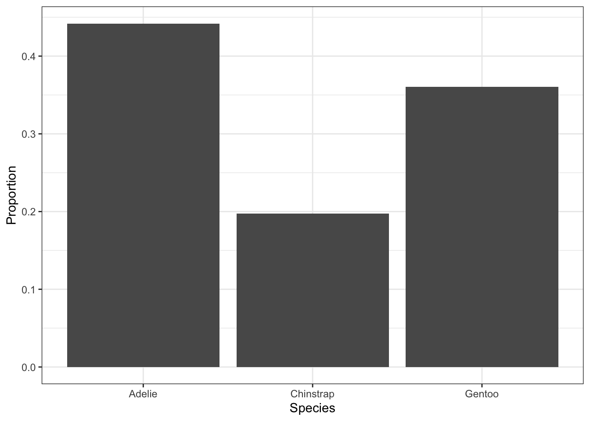
And here is an example of a doughnut plot.
Code
ggplot(penguins) +
geom_bar(aes(x = 2,
y = after_stat(count/sum(count)), # Specify y-axis
fill = species)) + # Specify fill coloring
coord_polar("y", start=0) + # Specify a pie chart
xlim(0.5, 2.5) + # To get a doughnut plot
theme_bw() + # A cleaner theme
labs(x = "", # Specify axis labels
y = "",
fill = "Species") + # Specify legend labels
ggtitle("Species in palmerpenguins Data") + # Plot title
theme(axis.text.y = element_blank(), # Removes y-axis ticks
axis.ticks.y = element_blank())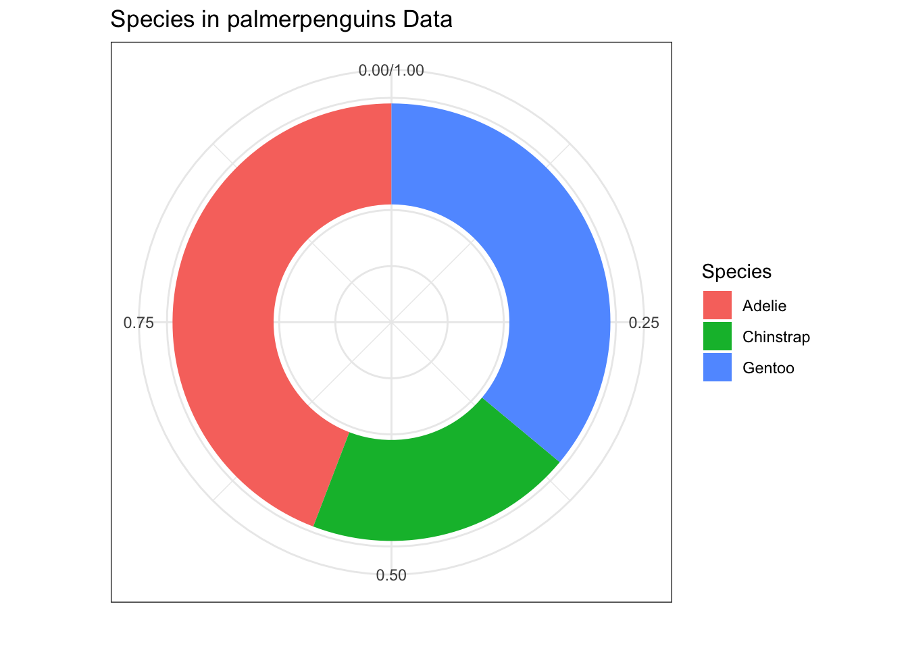
For two categorical variables, we employ the same strategy for a numerical summary as we did with one, with the addition of a new variable. This is called a contingency table.
Code
# A tibble: 5 × 4
# Groups: island [3]
island species n prop
<fct> <fct> <int> <dbl>
1 Biscoe Adelie 44 0.262
2 Biscoe Gentoo 124 0.738
3 Dream Adelie 56 0.452
4 Dream Chinstrap 68 0.548
5 Torgersen Adelie 52 1 To graph two categorical variables, we can employ grouped doughnut plots, a mosaic plot, or grouped bar plots. The code for these is below.
Grouped bar plots:
Code
ggplot(conditional.dat) + # Specify Data
geom_bar(aes(x = species, # Specify x-axis
y = prop), # Specify y-axis
stat="identity") + # We gave the statistic
geom_hline(yintercept = 0)+ # Plot x-axis
theme_bw() + # A cleaner theme
labs(x = "Species", # Specify axis labels
y = "Proportion") +
ggtitle("Species in palmerpenguins Data") + # Plot title
facet_wrap(~island) 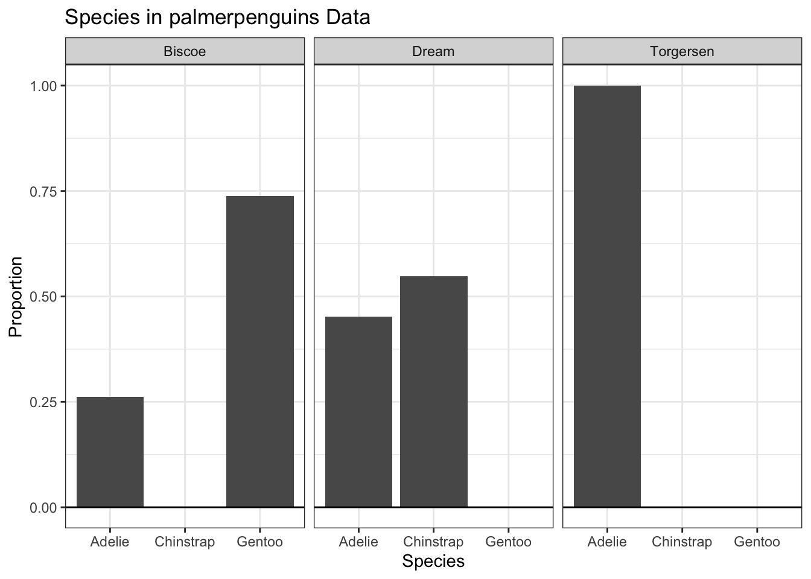
Note that this is nearly the same code as the singular bar plot, except prop is now in the data, and at the end we use facet_wrap() to separate by island.
This is another method of making a grouped bar plot. The difference is that it is all on one graph, and the color of the bars changes according to the species.
Code
ggplot(conditional.dat) +
geom_bar(aes(x = island, # Specify x-axis
y = prop, # Specify y-axis
fill = species), # Specify fill color
stat="identity") + # We gave the statistic
geom_hline(yintercept = 0)+ # Plot x-axis
theme_bw() + # A cleaner theme
labs(x = "Species", # Specify axis labels
y = "Proportion",
fill = "Species") + # Specify legend label
ggtitle("Species in palmerpenguins Data")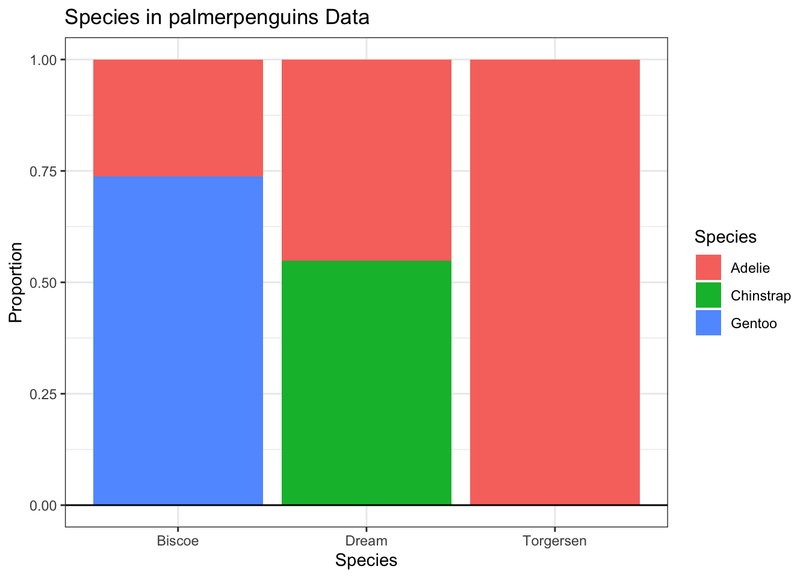
The grouped doughnut plot is largely the same as the singular doughnut plot, simply with more plots.
Code
ggplot(conditional.dat) + # Specify Data
geom_bar(aes(x = 2, # Specify x-axis
y = prop, # Specify y-axis
fill = species), # Specify fill coloring
stat = "identity") +
coord_polar("y", start=0) + # Specify a pie chart
xlim(0.5, 2.5) + # To get a doughnut plot
theme_bw() + # A cleaner theme
labs(x = "", # Specify axis labels
y = "",
fill = "Species") + # Specify legend labels
ggtitle("Species in palmerpenguins Data") + # Plot title
theme(axis.text.y = element_blank(), # Removes y-axis ticks
axis.ticks.y = element_blank()) +
facet_wrap(~ island)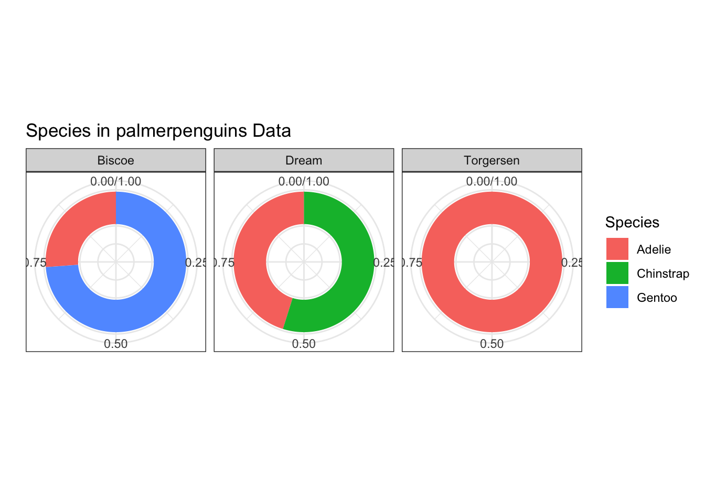
One continuous variable can be plotted with a histogram, boxplot, or violin plot. In a numerical summary, we want the mean, median, standard deviation, IQR, skewness, and kurtosis.
Here is the code for a numerical summary. Note it has the same basic form as the categorical variables, there are just different things being calculated in the summarize() command. In this case, the continuous variable is the body mass.
Code
Mean SD Median IQR Skewness Excess Kurtosis
1 4201.754 801.9545 4050 1200 0.4662117 -0.73952Here is the code for a histogram:
Code
ggplot(penguins) + # Specify Data
geom_histogram(aes(x = body_mass, # Specify x-axis
y = after_stat(density)), # Specify y-axis
breaks = seq(2000, 7000, 500), # Specify bins
color = "gray")+
geom_hline(yintercept = 0)+ # Plot x-axis
theme_bw() + # A cleaner theme
labs(x = "Body Mass (g)", # Specify axis labels
y = "Density") +
ggtitle("Body Mass in palmerpenguins Data")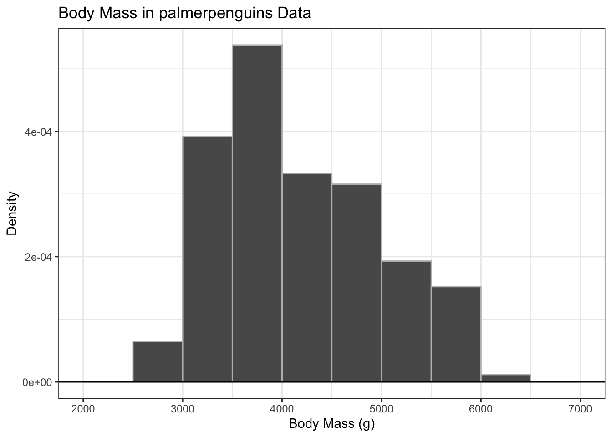
Here is the code for a box plot:
Code
ggplot(penguins) + # Specify Data
geom_boxplot(aes(x = "", # Specify no grouping
y = body_mass), # Specify y-axis
width = 0.1)+
theme_bw() + # A cleaner theme
labs(x = "", # Specify axis labels
y = "Body Mass (g)") +
ggtitle("Body Mass in palmerpenguins Data") + # Plot title
theme(axis.ticks.x = element_blank()) 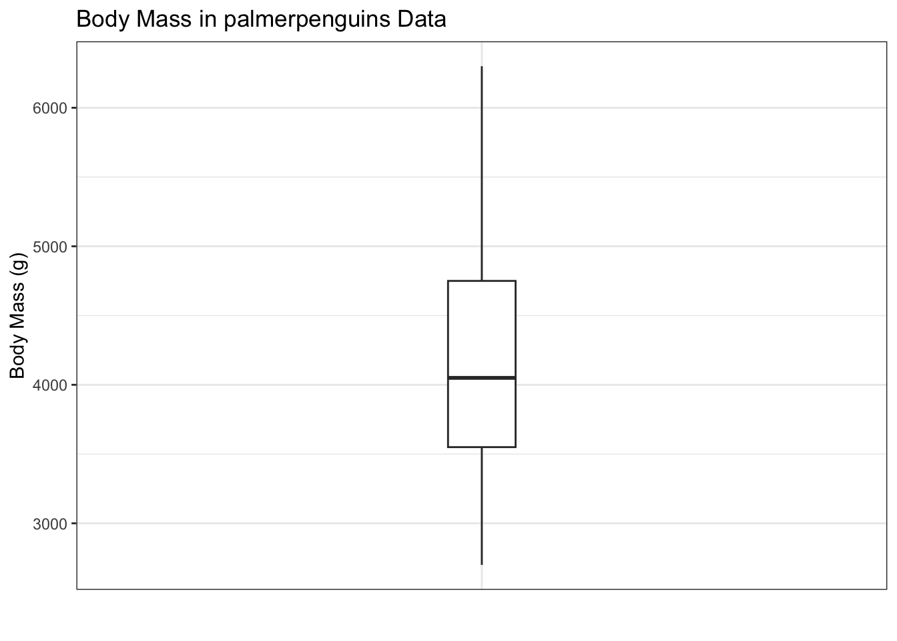
Here is the code for a violin plot. Note the similarity to the boxplot, just with the addition of the geom_violin() layer.
Code
ggplot(penguins) + # Specify Data
geom_violin(aes(x = "", # Specify no grouping
y = body_mass), # Specify y-axis
fill = "lightgrey", alpha=0.5) + # A transparent light grey
geom_boxplot(aes(x = "", # Specify no grouping
y = body_mass), # Specify y-axis
width = 0.1)+
theme_bw() + # A cleaner theme
labs(x = "", # Specify axis labels
y = "Body Mass (g)") +
ggtitle("Body Mass in palmerpenguins Data") + # Plot title
theme(axis.ticks.x = element_blank()) 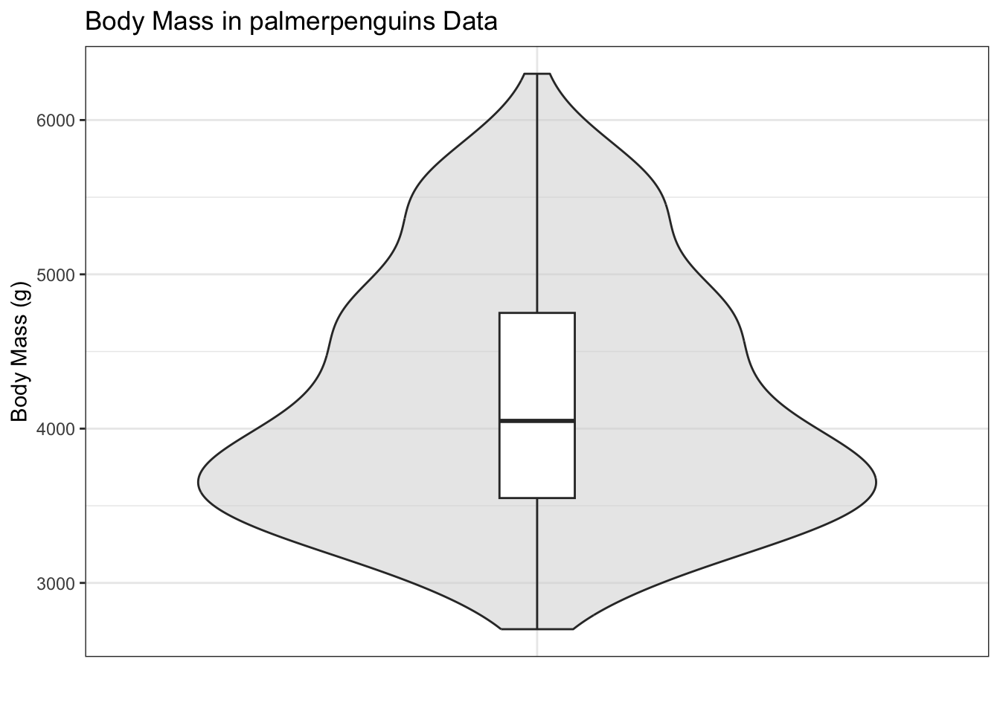
For one continuous and one categorical variable, we take the plots used for a categorical variable and group them. This gives us grouped histograms, grouped boxplots, and grouped violin plots. We use a similar process for the numerical summary, calculating group means, group medians, group IQR, and group standard deviation.
Here is the code for a numerical summary. Note the similarity to the numerical summary for one categorical variable - the only difference is the group_by at the beginning.
Code
# A tibble: 3 × 7
species Mean SD Median IQR Skewness `Excess Kurtosis`
<fct> <dbl> <dbl> <dbl> <dbl> <dbl> <dbl>
1 Adelie 3701. 459. 3700 650 0.280 -0.626
2 Chinstrap 3733. 384. 3700 462. 0.237 0.363
3 Gentoo 5076. 504. 5000 800 0.0679 -0.779For the grouped histogram, we take the code for the histogram and add facet_wrap() at the end to group it by species.
Code
ggplot(penguins) + # Specify Data
geom_histogram(aes(x = body_mass, # Specify x-axis
y = after_stat(density)), # Specify y-axis
breaks = seq(2000, 7000, 500), # Specify bins
color = "gray")+
geom_hline(yintercept = 0)+ # Plot x-axis
theme_bw() + # A cleaner theme
labs(x = "Body Mass (g)", # Specify axis labels
y = "Density") +
ggtitle("Body Mass in palmerpenguins Data") + # Plot title
facet_wrap(~species, nrow =3)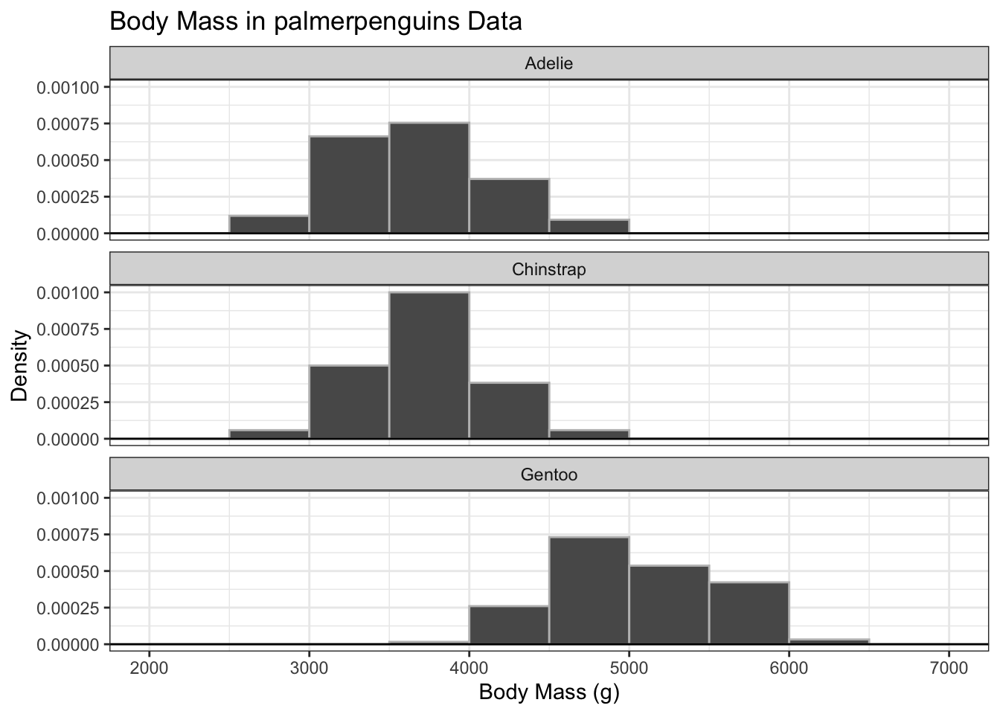
Here is the code for a grouped boxplot.
Code
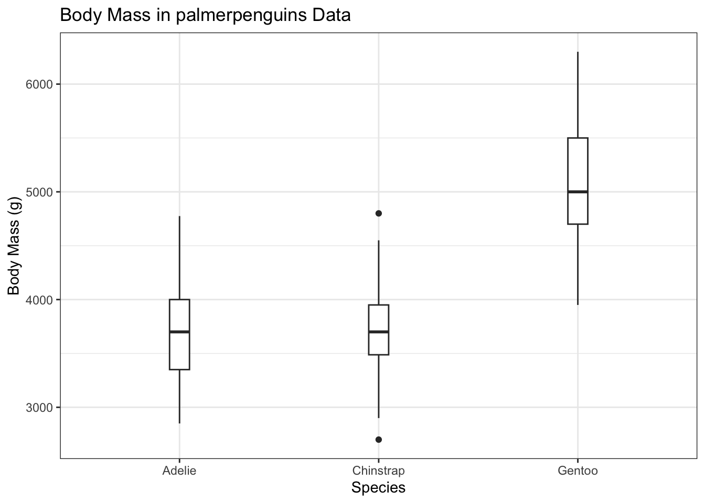
Here is the code for a grouped violin plot.
Code
ggplot(penguins) + # Specify Data
geom_violin(aes(x = species, # Specify no grouping
y = body_mass), # Specify y-axis
fill = "lightgrey", alpha=0.5) + # A transparent light grey
geom_boxplot(aes(x = species, # Specify no grouping
y = body_mass), # Specify y-axis
width = 0.1)+
theme_bw() + # A cleaner theme
labs(x = "Species", # Specify axis labels
y = "Body Mass (g)") +
ggtitle("Body Mass in palmerpenguins Data") 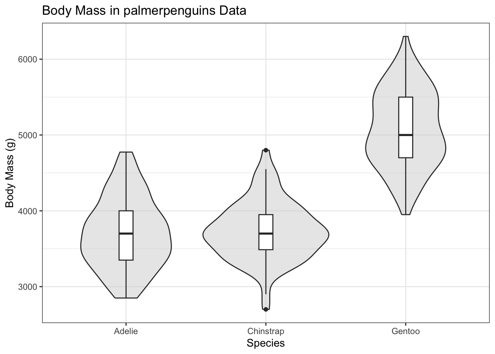
For two continuous variables, we only make the scatter plot for a graph. For the numerical summary, we calculate Pearson and Spearman’s Correlations, and Kendall’s Tau. The code for these is below.
Code
Pearson Spearman Kendall
1 -0.2350529 -0.2217492 -0.1228502Code
ggplot(penguins) + # Specify Data
geom_point(aes(x = bill_dep, # Specify x-axis
y = bill_len)) + # Specify y-axis
geom_smooth(aes(x = bill_dep, # Specify x-axis
y = bill_len), # Specify y-axis
method = "lm", # Specify best fit line
color = "black") + # Specify line color
theme_bw() + # A cleaner theme
labs(x = "Bill Depth (mm)", # Specify axis labels
y = "Bill Length (mm)") +
ggtitle("Body Mass in palmerpenguins Data") #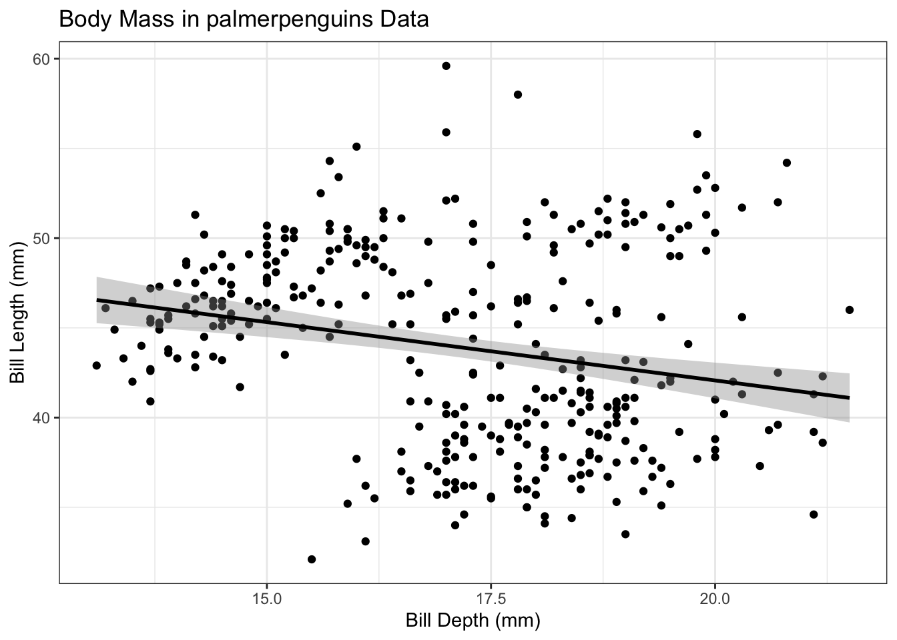
We can expand upon the scatterplot to group it by a categorical variable.
Code
ggplot(penguins) + # Specify Data
geom_point(aes(x = bill_dep, # Specify x-axis
y = bill_len, # Specify y-axis
color = species)) + # Specify color
geom_smooth(aes(x = bill_dep, # Specify x-axis
y = bill_len, # Specify y-axis
color = species), # Specify color
method = "lm") + # Specify best fit line
theme_bw() + # A cleaner theme
labs(x = "Bill Depth (mm)", # Specify axis labels
y = "Bill Length (mm)",
color = "Species") + # Specify legend labels
ggtitle("Body Mass in palmerpenguins Data")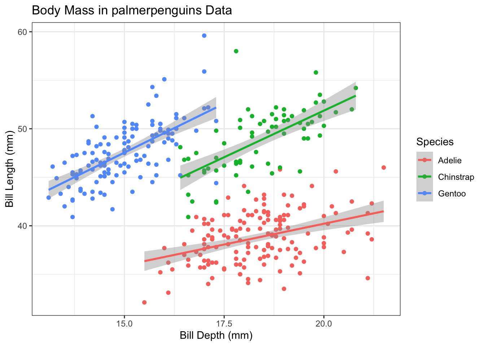
Here I practice with a different dataset: Horseshoe crabs. I chose two continuous variables: weight and width, and one categorical: color. There appears to be a positive correlation between width and weight, but there is not seemingly any correlation between color and width, or color and weight.